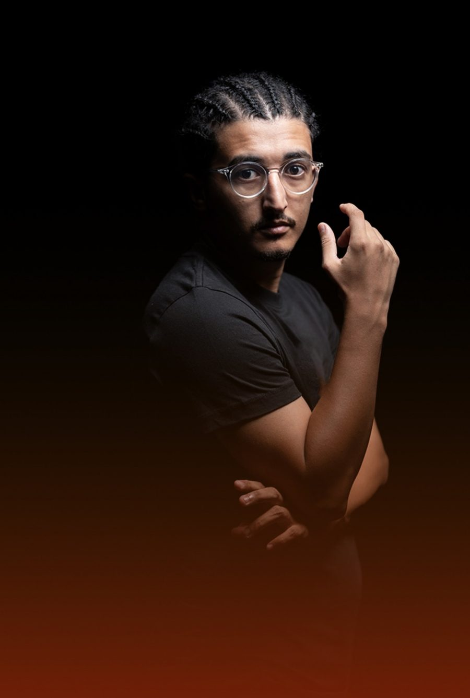

Ilias BerkoukPhotographer · Videographer · DesignerCasablanca
I shoot forYassmine El Jirary
01 / 08
See the work

About
Moroccan creative behind visuals for Canon, CAF and Wydad.
I'm Ilias, a photographer, video editor and content creator based in Casablanca. I help brands, events and sports clubs turn ideas into visuals that work on their platforms, from the shoot to the final edit and the brand identity around it.
Videography
- Event coverage
- Interviews
- Video editing
- Social media content
Photography
- Sports and portraits
- Fashion
- Food
- Products and packshots
Branding
- Logo design
- Visual identity
- Packaging and print
Selected clients
Work
Contact
Let's make